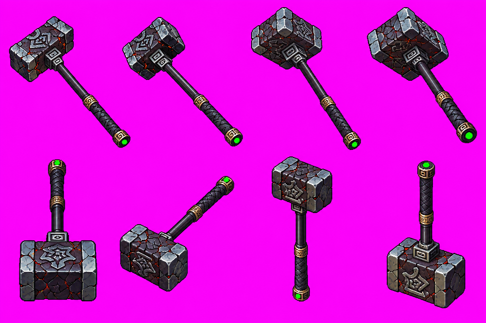
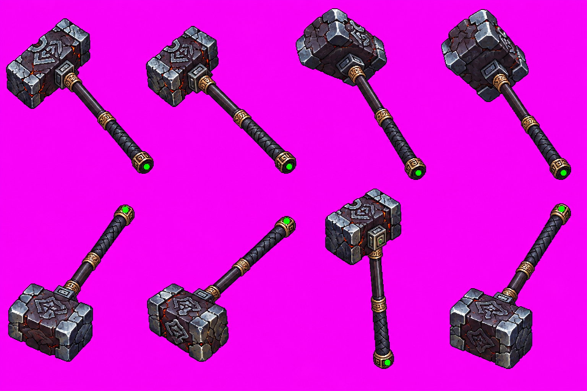

Hạo Thiên Chùy — tám pose vũ khí riêng
Phương pháp, nguồn và tái tạo · Số đo và kiểm chung · Preview công cụ đầy đủ (có hướng chưa làm)
Đang đọc số đo…
RAW các atlas đã chọn

Nam s — lượt 2, RAW nguyên byte. Lượt 1 thiếu marker, giữ trong hồ sơ.
Đông-nam se — lượt 1, RAW nguyên byte.